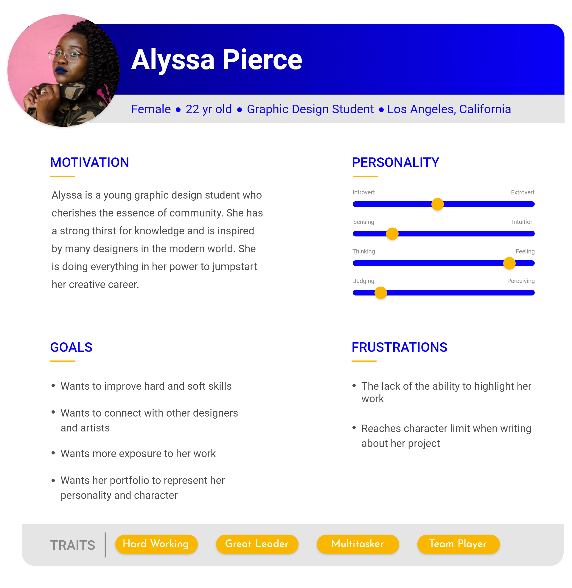
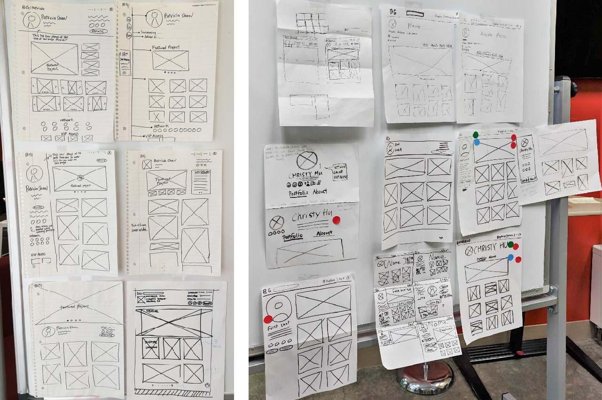
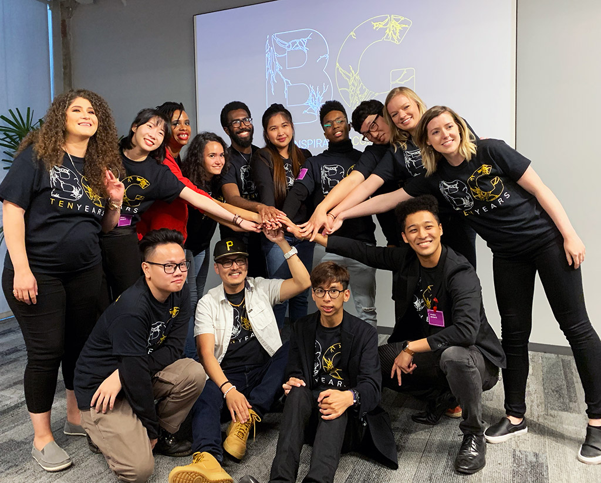

BRIDGEGOOD Portfolio Feature Redesign
Overview
The most important piece of a designer's career is their. For those who are starting out in the creative profession, locating a valuable and free portfolio product can be difficult. BRIDGEGOOD is a nonprofit organization that lends a helping hand to early-career creatives who seek opportunities to jumpstart their careers. It provides a platform that enables designers, artist, and creatives to showcase their projects to the world while gaining valuable feedback on their work and exposing themselves to career-centric explorations.

Problem
BRIDGEGOOD.com is a web-based porfolio platform that has successfully acquired over 5,000 users. However, the platform has an issue with retention, in which users who join BRIDGEGOOD tend to become inactive shortly after. We've come to the conclusion that this is because early-career creatives are opting to use other platforms to fulfill the needs they are looking for in a portfolio.
UX Challenges
The look and feel of one's porfolio is purely subjective to the user. This means that different people can prefer a different style or dynamic in which their portfolio is structured. Inaugurating a single design that can fulfill the basic style, wants and needs of the all of the different users across our platform was a reoccuring bottleneck throughout its existence.
Goals
With this feature redesign, the goal was to promote a stronger incentive to use the BRIDGEGOOD platform as a primary portfolio for early-career creatives. This includes creating a more intuitive experience and visually inviting design architecture.
Process
Understand
User Interviews
User interviews were the initial steps taken when trying to better understand our users. We were able to get 12 different early-career creatives to participate in this pivotal part of our research. The questions we created targeted user's pain points when interacting with the BRIDGEGOOD platform. These are the three main themes we identified after the user research session.
With these findings and insights from the users, we knew there were a few principles that we wanted to marry moving forward.
We wanted...
- Seamless storytelling integration
- Humbled branding experience
- Visual engagement
A key point that was mentioned was this concept of telling a story. We wanted ensure that we would create some type of system that would allow for this full story telling experience for both the user and their viewers.
The team and I concluded that finding a sweetspot between allowing the users to express themselves through their projects, whilst still maintaining the BRIDGEGOOD branding, was vital for the satisfaction of both the users and the business. Scaling the branding down a bit to allow for this was something we fostered.
Users don't just use a portfolio as a library to hold all of their work. The portfolio's visual communication plays a major role on how someone can feel while viewing that person's work. We wanted to highlight the importace of this. As voiced by some of our users, a featured project could invite this concept.
Competitive Analysis
We conducted an analysis to see how our competitors handled a portfolio platform that a mass range of users has access to. With this large number of users and a fairly decent retention rate, we believed these competitors could provide intel and inspiration as to how we could better solve our problem.
Defining the problem
Thus far, with all of the gathered information from our research, we began mapping the problem and form a concise statement that embarks concerns of our users. The problem statement that we have concluded with is "How might we increase user engagement on the BRIDGEGOOD's portfolio feature?"
User Persona
With the problem defined and the pain points mapped by our users, we began creating an archetype of what an early-career creative looks like on the BRIDGEGOOD platform.
User Journey
Ideate
Sketches
We went through a series of different sketch exercises to best curate visual and logical solutions to solve the problem. Some of these exercises included...
- Crazy 8's
- Collaborative Whiteboard Sessions
- Individual Sketch Sessions
After a couple of days of registering sketch concepts, we all made votes on which direction best addressed the three themes we identified in our initial user research.

Prototype
You can experience the full functioning feature at BRIDGEGOOD.com

Old vs New
Evaluate
Stakeholder Presentation
We brought our discoveries and processes to 50 of our stakeholders, going in-depth about the newly added features and revamped experiences within the portfolio feature. We received positive feedback from our audience, with majority voicing there excitement with the new visual hierarchy and portfolio experience. From here, we began the designer-to-developer hand off and began shipping the features fully.

Final Thoughts
One's porfolio plays as an element of their expression, in which a person who is viewing that person's work will get an instant impression of the owner's personality and style. It's important that platforms keep this in mind when establishing tools that enable users to house some of their most expressive and prized work.